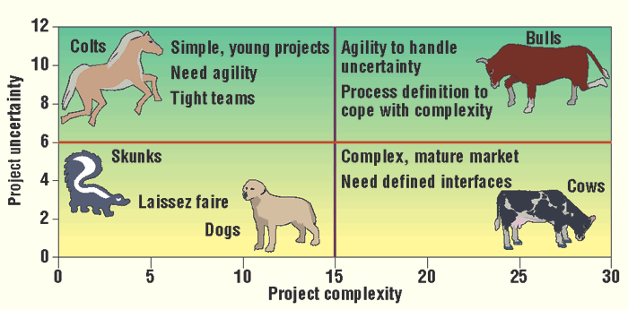

Cross-posted from the Mandarin
We do have a few advantages, perhaps the greatest being that we don’t have a strategic plan
Warren Buffett
It's a common lament that, within organisations whether in the public, private or not-for-profit sector, boards and/or senior management don't get enough time to talk strategy, that they get caught up in the weeds. Another common refrain after time is made is that it wasn't well spent and that any conclusions it came to were useless and/or ignored come Monday morning. What's going on here?
In the most glamorous parts of the economy - in start-up land - strategic questions like what the organisation's value prop really is/should be and to whom and whether and when the organisation should 'pivot' are often crucial and top of mind, though even here, big strategic decisions are very occasional, made on very inadequate information and then it's down to execution.
Why strategy?
Why the hankering for strategy? I think it comes from an inchoate mix of things - good and bad. Firstly 'ops' reports and their discussion aren't usually taken as invitations to wider strategic discussion. And if they were, departures into strategic questions need to be well structured/managed and responses to ops reports might not be the best place for them. Secondly, for many senior management and board members, frustrations abound. Organisations perform and coordinate a range of activities that can be highly skilled and governing that is rarely done well - because it's inherently very difficult. Of course, bad organisations have frustrations, but only dull organisations don't have frustrations. So senior managers are groping to find ideas and tools to fix those frustrations - because they're often connected with each other. Do we need a different culture? Why don't we spend more time focusing on where we're going rather than how we're going? Are we too hierarchical - surely if we were less hierarchical communications would be a lot better between marketing and finance, manufacturing and HR or policy and implementation.
Strategy as performance of high status management
Finally one of the big drivers is status and upward flattery. Deliberating on strategy is a performance of senior management's responsibility and so, importance. Note, in this context, the way strategic thinking can legitimate endless do-loops in which those with the greatest power and prestige in the system rehearse their power and prestige which is a critical part of the problem. Thus as Mike Bracken writes in defence of the slogan "The strategy is delivery" about his period in the UK's Government Digital Service:
One of the many lessons in my 18 months in Government has been to watch the endless policy cycles and revisions accrue – revision upon revision of carefully controlled Word documents, replete with disastrous styling. Subs to Ministers, private office communications, correspondence across departments and occasional harvesting of consultation feedback all go into this mix.
Rarely, if ever, does user need [ie a low status consideration] get a look-in. User need, if referenced at all, is self-reinforcing, in that the internal user needs dominate those of users of public services. I’ve lost count of the times when, in attempting to explain a poorly performing transaction or service, an explanation comes back along the lines of ‘Well, the department needs are different…’ How the needs of a department or an agency can so often trump the needs of the users of public services is beyond me.
Andy Murray's Retreat: Twelve take-outs you just won't believe!
Consider our friend illustrated above who, judging by the photo, could not be said to lack intent. I am surprisingly well-connected in the world of elite tennis. So, whenever I'm watching Wimbledon - whether from my private box or on the box - I've always got a lot of highly strategic observations about how each of the players could improve. It's a wonder the place isn't bugged right? But who's to say, in this day and age, it's not? Certainly, I've been going on about Federer's need to improve his backhand against Nadal, and what do you know? Two big wins in a few weeks. In any event, a few years ago Andy went on a strategy retreat. After the first morning with his team and a facilitator from BCG, a vision was agreed. "My mission is to be No. 1 in the universe". On further reflection over the afternoon, everyone agreed that not just Andy, but the entire team could do with more focus. For Andy's team, you really can't get enough focus.[1. For a while, Andy's team considered this as a vision statement: "Andy, Andy, Andy, Focus, Focus, Focus". Later they nearly settled on "Andy Murray: When too much focus is barely enough". The session was abandoned after Andy got a migraine, but that gives you some flavour of how seriously the whole thing was taken.] So this was narrowed down to "My mission is to be No 1 tennis player on planet earth". See how we were able to narrow down Andy's task - by orders of magnitude. The rest of the retreat was dedicated to 'driving down' this mission into a concrete business plan. With the hard decisions out of the way, and the time-consuming wordsmithing largely dealt with, it took only another half day to come up with these goals (which were then sent off to corporate to be mapped onto KPIs offline).
- "My mission is to have the absolute bestest first serve on planet earth"
- "My mission is to have the absolute bestest second serve on planet earth"
- "My mission is to have the absolute bestest return on planet earth"
- "My mission is to have the absolute bestest groundstrokes on planet earth"
- "My mission is to have the absolute bestest low forehand volley on planet earth"
- "My mission is to have the absolute bestest low backhand volley on planet earth"
- "My mission is to have the absolute bestest smash on planet earth"
- "My mission is to have the absolute bestest topspin lob on planet earth"
- "My mission is to have the absolute bestest defensive lob planet earth"
- "My mission is to have the absolute bestest court speed on planet earth"
- "My mission is to have the absolute bestest match temperament on planet earth"
- "It would be nice if Black Ops could do something about Roger's comeback".[2. This dot point should not be here and was inserted by Troppo's AI division where we've got some guys working on humour wearing orange comb-over wigs. Total lightweights. Sad.]
This is the beginning of the list anyway. There was plenty more. Andy felt a bit daunted by it all of course - and that's before taking into account the fact that it usually takes him several days to get over his migraines. And the next half day was taken up debating which of these goals was the most strategically important. Anyway, the team agreed that they'd benchmark Andy's performance regarding each of these goals and then come up with a plan to get him to the goal.
The limits of strategy as strategy
What's the point of my story? Let me count the ways:
- All of the qualities that turn up in the list are very important to Andy's game.
- Even with one of these goals, it's hard to have a 'strategic' view of the question from on high. One needs practical knowledge from the field of what can be improved most easily. A 'strategic' insight might be that what economists call Andy's 'objective function' - should be to rank all the possible changes he can make or practice he can put in by its prospectivity to improve his results in matchplay taking into account the ease with which the improvement can be wrought. [2. Technically one might define this 'objective function along these lines "Practise to maximise M/E" where M = match impact and E = ease of improvement.] Sadly, there's a fair chance that 'strategic insight' is useless since, if Andy and his coach are moderately intelligent they'll have come to some commonsensical version of it already.
- Strategy is about difficult choices involving tradeoffs. Strategy retreats or even exercises conceived of as essentially strategic can often offer the wrong circumstances in which to make these decisions, particularly before they've presented themselves to people in the process the organisation's operations.
- Such trade-offs are often hard to understand except quite close up and at the time of making them. They're hard to foreshadow in the kind of detail that would add insight.
- Each goal is largely independent. It's a mercy that things are 'modular' like this, because improving things is hard enough. But truly strategic discussion begins where this is not the case - where one aspect of an organisation implicates others with strategy seeking to understand, illuminate and then work constructively with this relationship.
- Apparently commonsense setting of priorities - where we agree for instance what the highest priorities in the list are - often gives the appearance of commonsense whilst actually being dysfunctional. Imagine trying to work out which objective in the list is the most important. You'd need a deep strategic understanding even to begin to do this sensibly. And yet this kind of prioritising is pretty standard at strategy retreats. People will buy into the debate. They'll argue, as do Woody Allen's parents in Annie Hall "have it your own way, the Atlantic Ocean is a better Ocean than the Pacific Ocean". But the fact is that if we set priorities by ranking the list above we've set a trap for ourselves. We think we're engaged in careful thought but it's the way we happened to organise the discussion is dominating the conclusions we come to. To go on and on strategising as to which is the most important of Andy's goals on the list above is to demonstrate that you're captive to the apparent commonsense of the process. Not only hasn't this putatively strategic process helped you, it's actively diverted you from thinking critically about issues at hand.
In this case, I can imagine only one question which requires some decision to be made which then structures other decisions and so, arguably requires 'higher' or 'strategic' thinking. That's the question of whether Andy should serve and volley more or less. If he's going to vary that, then that has implications for other goal setting rather than simply being sorted out on the training track and weekly scheduling where Andy and his coach, sports psychologist, masseur, physio, photographer, life coach, biographer, nutritionist and publicist can deliberate in a commonsensical way on how Andy's going in improving some aspect of his game and how that affects his priorities 'going forward' which, is an expression his team started using a lot more since the strategy retreat.[3. it's also the case that there are what one might call lower-order or 'lower-level' strategic relationships between the various strokes and manoeuvres Andy wants to get better at. Practice on one's second serve might help with one's first and so on, but I'm calling these 'lower-level' because they have some strategic content but are best handled at by Andy and his trainer, masseur etc. They needn't involve the board or even senior management.] Note that, even here, if the one decision we've identified as properly strategic is to be made well, it will depend on the quality with which the insights at the coalface find their way into the strategic decision. So getting the right intel from within and without an organisation into strategic decision making will often be a central challenge. Both Andy's physio and masseur have confidentially told me that the extra work beefing up the second serve and rushing the net will involve further stress on already stressed parts of Andy's body.[4. They also told me, confidentially what that part of the body was, but that was extra confidential, so I'm afraid I can't share it at this stage, or even going forward.] Moreover, his sports psychologist says that Andy's confidence doesn't hold up when he fluffs early volleys, so that would need to be taken into account in both deciding whether or not to bring on Andy's power game and, if the decision were made, in its execution.[5. It's actually more complicated than this - as the last time Andy's sports psychologist told him he wasn’t good at something, Andy had a two month form slump and his incisors grew an additional millimetre over that period (the picture above was taken before that period), so there's a tacit agreement that these kinds of things aren't discussed with Andy, though they can be discussed with his hard-driving mum, though there are said to be 'tensions' between her and Andy's sports psychologist which complicates things.]
Critical thinking and strategy
Today organisations outsource a lot of their high level 'strategic' thinking to consultants. The upside is that, being more highly paid, consultants are often more competent than those who'd do the same strategy work in many organisations. The downsides are considerable, however. Let me count (some of) the ways. Firstly, they're less invested in their clients' success than insiders. Secondly, they're typically largely bereft of corporate memory (though this is offset, or even outweighed, by their ability to generalise from experience in other organisations). But the big problems I think are that their schtick is so well attuned to flattering those who hire them - those at the top. So they're very good at simulating insight. As I wrote recently, there are lots of charts, recognised 'frameworks', proven means of engaging those who preside at the apex of decision making in the organisation - quadrants with animals on them for instance. You know the kind with Cash Cows, Dogs, Bulls and Naked Mole Rats - that kind of thing.

As you can see this quadrant embodies some pretty serious thought of the very synthesising kind. You should see the shock of recognition from our clients at Troppo's Consulting Division. And here's the thing. Those ideas are handy, often compelling 'one-size-fits-all' heuristics. If that's the upside, and it is an upside, it's a bit like inspiration porn. High arousal, material which, in asserting the obvious might be useful, because it's easy to forget the obvious. But I worry about the downside. These heuristics don't encourage - indeed my guess is that they suppress - critique. And yet, as I think I've illustrated with my list of Andy's goals, simply going through a process of goal setting will be a trap. It is likely to give birth to a list of Very Serious Decisions made by Very Serious People that are either carefully expressed to be vague, ambiguous and/or all things to all people (AKA mission, vision and other theological statements) or which run the risk of being foolish on their face once thought about by those unlucky enough to deliver on strategic decisions in practice.[6.Thus when Shane Parish writes that the "problem with most management, leadership, and business books is that many of them harp on the same self-evident points, overconfident in the usefulness of their prescriptions for would-be imitators", he's being too generous. Because the idea of sorting out one's priorities and goals in some linear way may seem self-evident. I guess it is, but there are many ways to do it that end up with crude and wrong answers.] It's critical thinking that gets us to the insight that prioritising Andy's goals one goal at a time is foolish. It's critical thinking that suggests that, however much fun, entertainment and self-flattery we get from seeing the charts that benchmark each aspect of Andy's play, they don't themselves embody careful, disciplined, and imaginative thought about the problem. Without critical thinking, all that priority setting at Andy's strategy retreat seemed like the acme of commonsense. It's certainly not a surprise that it could have come out of a process in which people were arranged into teams at tables with little bowls of Cool Mints, who then reported back to the larger group which then boiled those reports down to the lowest common denominators - to all those conclusions simple enough to survive the winnowing process and sufficiently commonsensical seeming to become the landing point of a long day's journey into strategic outputs. So here's my bottom line: The most important strategic question for the organisation - and the most difficult managerial task - is to have good lines of communication, mutual critique and feedback up and down and throughout the organisation - and indeed beyond it to customers and suppliers.A postscript on strategy as the orchestration of distributed, critical intelligence
Yes, there are classic strategic questions to be deliberated at the 'top'. Organisations need to make large and often difficult choices. Should we refurbish our stores or spend more on marketing? Should we burn our existing source of finance and move to a cheaper supplier. Should head office be in the CBD or closer to our users? But making those choices as well as possible will very often involve being able to access the collective intelligence of the organisation at every level, and that is the hardest thing to bring off well. It was appreciating that that was one secret of Toyota's success. (As I recall the CEO of Ford saying to me in 1983, the 'secret' of Toyota's success was "meticulous attention to the fundamentals".) No doubt people thought about 'strategy' as in Grand Strategy. If and when do we go into the American market and how do we do it? Should we go after luxury cars and if so how? However, the most important strategic thing Toyota did was to come up with a response to the dysfunctions of central planning which, as the famous pro-market philosopher Friedrich Hayek had pointed out since the 1920s (I presume unbeknown to the boffins at Toyota) related to the need to access distributed intelligence. Hayek's answer was always readymade - to embrace the way markets can harness distributed information. But by the late 1940s Hayek had wrapped his argument for the indispensability of markets in a larger story about the way in which systematic knowledge taught in universities - the knowledge of the scientist, engineer or accountant - came to dominate the more mundane knowledge of context and place at the 'coalface'. This was a story about the hubris of the professional classes, if anything amplified by the groupthink and routines of bureaucracy. However, though the foibles of bureaucracy and central planning were a problem for Toyota, there was no readymade deus ex machina that could be accessed to solve the problem because firms are necessarily centrally planned. Toyota had to imagine how one might tame bureaucratic hubris to access the collective intelligence distributed throughout Toyota's workforce on the production line and even the intelligence of suppliers and customers. It then did the harder and more painstaking work of building a system that accessed it for decision making throughout the company. And that required applied humility - rather as I'm arguing cultivating and accessing critical thinking throughout an organisation does.[7. On humility, a close reading suggests it may not be much more than a bit of scientific linkbait, but this article is being promoted through a Medium Post as showing "Why Humble People Make Better Decisions". They do, but the reasoning in the paper seems perilously close to circular to me.] Finally, a story I love which, for me, sums up the importance of critical thinking and applied humility. It's told by Edwards Demming, the American musician and process control statistician who helped conceive and build the Toyota production system. Once it was proving its power the Americans from whom Toyota had originally learned and whose ideas on driving down waste they'd taken much further started making a beeline for Toyota's factories in Japan. As I understand it the Japanese were quite open in demonstrating their operations, their production ideas and culture. As Demming said, they come they watch and they go home and they copy. "But they never know what to copy".
Nick this is amazing *but* I'd take exception to this:
I have a feeling this reflects on the consultants' ability to market themselves, rather than their ability to carry out the tasks they market.
Nick,
i think you have it dead wrong. too much time and effort is on restructuring i.e better execution of strategy rather than examining whether it is the right or wrong strategy in the first place.
Certainly when I was at business school this was the case.
I read a lot about companies restructuring but very rarely about them changing strategy.
Nicholas
Re Toyota and the Americancar makers.
A Zen parable:
a Indian guru one day got bored, so he levitated of the ground and flew to China. The guru landed on a road in front of a Zen priest.
The guru said to the priest ' I've just flown here from India what can you do? The Zen priest responded, when I am tired I sleep, when I am hungry I eat, when I am happy I laugh.
The guru thought about it for a while and then bowed deeply and flew home .
Toyota ( going off your reporting )understands the difference between faith and , magic .
BTW The Andy Murray stuff is, I hope, imaginary , hard to tell these days...
Homer, if you think organisations should do more strategy good luck to you, perhaps they should - but the kind of thing that's called strategy is, as I've tried to explain in the piece, an exquisite kind of anti-strategy.
Thanks liam
You may be right - it's my impression - clearly different to yours. Certainly I've been in situations where the people available even at senior levels in organisations haven't been that bright.
I suspect that it's one reason the public sector uses consultants a lot is that there's a lot of dead wood throughout the public sector (though if you're trying to find the very brightest most useful people they're still in the public service). On the other hand consultants don't have people who can't do anything and who's main talent is to look purposeful. People who work for consultancies get sacked if they don't work pretty hard and effectively and if they can churn out moderately literate reports which are a convincing simulacrum of the genre.
When I was at the PC, many teams laboured for months eventually producing writing that had to be rescued in the last few weeks.
This isn't me saying that this is a good thing as there are lots of downsides to hiring consultants - as documented in my piece. But I can tell you this. I've been involved in writing about ten government reports in my life and it's been a very rare experience where, if I wanted them to make sense, I didn't have to mostly write them myself. With a team of two or three from a big consulting firm I could give them instructions and get a reasonable product and then spend my time polishing and working on the hard bits.
If you have no strategy you have no idea of where you are going and how you are going to get there
Its a paste that you rub on strategic parts of the body, I have a lovely boxed set of it can let you have some at mates rates but hurry offer can't last.
Yes, I guess that's where my entire argument breaks down.
You might like to think that, but it starts from a very corporate approach by the commentators:
At 5/5 in the tie-break, Raonic missed his last forehand down the line, and he missed a similar forehand on match point to lose the match. Both shots were born of smart strategy of matching up a forehand approach against a backhand pass. They just needed slightly better execution.
They just needed,slightly better execution. :-)
I don't know, we're trading anecdotes at the moment. My experience of consultants' reports is that they're too often simply a cut-and-paste recitation of what a Department wanted to do anyway, but as an 'independent' case to Treasury.
My view is that the reasons consultants are highly paid has a lot more to do with the fallacy of the people who pay them---that the more one pays for advice, the more valuable it is.
Lots of fun, and I agree entirely with the tagline quote from Buffett
Dear Not Trampis Strategy is a string of seven Arabic-western characters.
This passage on Macintyre seems apt regarding the faux commonsense of managerialism - or as Homer has put it for us - how can you get anywhere if you don't know where you're going?
In Stolz, Stephen "MacIntyre, managerialism and universities" Educational Philosophy and Theory 49(1):38-46 · May 2017
DOI: 10.1080/00131857.2016.1168733 and available to me on Researchgate here.
Nick
The role of consultants in the public service deserves its own post. It's rarely about dead wood (there is certainly a fair bit of that, but that has little to do with the use of consultants). It is simply part of the culture to hire them. For example, you often hire one of the big 4 simply to put its logo on the report (knowing you will have to rewrite substantial chunks). When the public service doesn't know what to do, it automatically hires a consultant.
The really hard thing as you say is to create a culture of communication and critical thinking. Glossy consultant reports are a good way to satisfy the public's demand that the public service looks like it knows what it is doing.
As a global antidote to all this and other such bullshit, of course I presume you know about Lucy http://podcast.ft.com/s/listen-to-lucy/
Anyone who doesn't should try it.
A friend put me onto Listen to Lucy just this weekend. Lots of fun, though I don't agree with her on a few things.
But contra bullshit, this is a highlight!
I note she's also married to David Goodhart who seems like an interesting guy even if the left are beating him up for his latest coming out as a 'post-liberal'.
I thought this (summarised here) was an excellent, and it turned out prescient article.
And yes, I agree, the use of consultants by the public sector does deserve a post or two of its own. And yes the badge and the dramaturgy of knowing what you're doing are paramount, I agree. But my points still stand. If you get a small team to help you out to write a report, if they come from a consultancy they'll usually be competent and hard working. If they're from the public sector, they'll be people others can spare and generally pretty useless. That's been my experience in any event.
Note to self: This link may be of some interest when I revisit this.